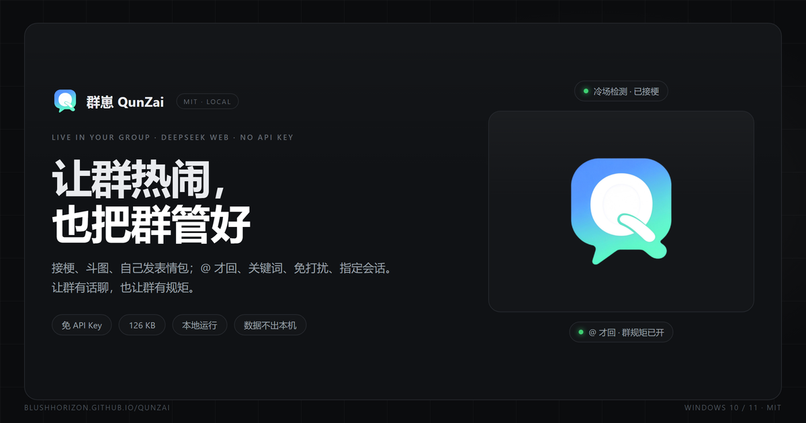

ABOUT
一个人闷头想出来的群搭子
能想到的早就想完了，你提的点子才是它变好的方向。
THE STORY
让群热闹，也把群管好
群崽是我一个人闷头想出来的。想做一个住进 QQ 群的 AI 搭子：不刷屏、不抢话，冷场了接得住梗，该闭嘴时真能闭嘴；表情包自己发、群里说过的事记得住，边界交给主人定。
它没有 API 账单——用本机浏览器驱动网页版大模型；它不把数据传出去——聊天记录、表情包、登录态、日志都在 D:群崽data。群崽自身 126 KB、零 npm 依赖，安装包里那 80 MB 是随包附带的 NapCat 监视器与 Node 运行时。
软件免费开源，所有功能都不会锁进付费档。爱发电完全自愿，不发电也完全不影响使用。

AT A GLANCE
一些事实
| 项目 | 值 |
|---|---|
| 创建 | 2026 年 10 月 · v1.0.0 于 2026-10-21 发布 |
| 协议 | MIT © 2026 QunZai contributors |
| 技术 | OneBot 11 + 网页版大模型（CDP）· 零 npm 依赖 · Node ≥ 22 |
| 数据 | 只在本机 D:群崽data，无任何遥测与联网上传 |
| 桌面版 | v1.4.17 · 85,204,189 字节 · 自带 NapCat + Node |
| 安卓版 | v1.4.24 最终版 · 默认免费 API · 开箱即用 |
得说清楚的事
!这是玩具，不是产品。它会把大模型生成的文本自动发到 QQ 群聊，没有审核、没有黑名单、没有人工确认，生成内容可能不当，发出去收不回来。
- 违反 DeepSeek 用户协议：不是反代、没有第三方中转、没有逆向网页，原理是 CDP 模拟输入；但这与反代一样违反协议，账号可能被临时限制或封禁。
- QQ 风控：高频发消息/发图是风控大头。内置最小间隔、批量单条、40 秒冷却、免打扰时段等护栏，请勿用于骚扰、刷屏、恶作剧，建议用小号。
- 仅供学习使用：请在 24h 内删除。MIT 并不禁止你留着——删不删由你，作者只是希望它别被拿去干正经事，也别被拿去干坏事。
- 与官方无关：本项目与 QQ / DeepSeek 官方无关；各网站结构变更可能导致网页驱动需要调整。
完整条款见 使用须知与隐私。
EASTER EGG
顺便玩个彩蛋
页脚那个「让页面自己长出来」按钮，会让一群协作光标把这个页面清空、再一笔一笔重建回来。纯前端、默认静音、不采集任何数据。